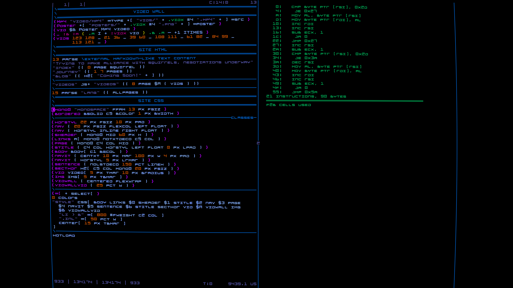
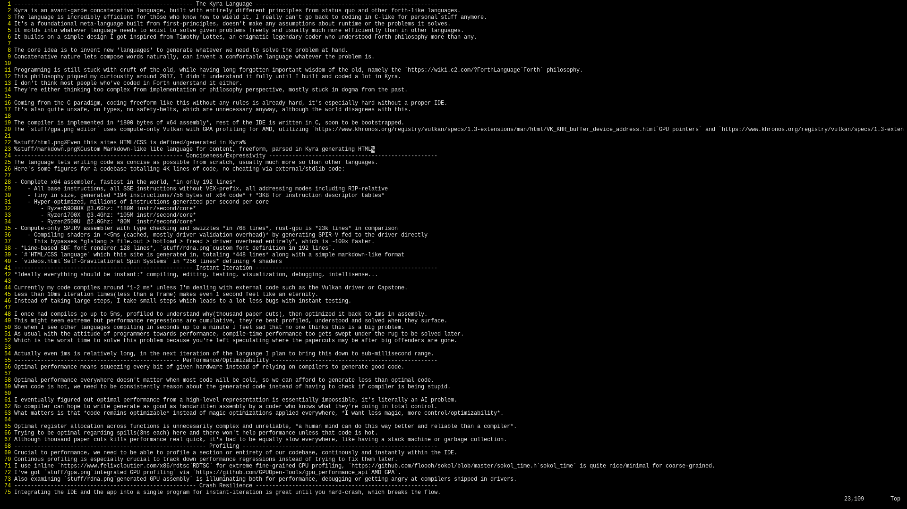

The Kyra Language
Kyra is an avant-garde concatenative language, built with entirely different principles from status quo and other forth-like languages.
The language is incredibly efficient for those who know how to wield it, I really can't go back to coding in C-like for personal stuff anymore.
It's a foundational meta-language built from first-principles, doesn't make any assumptions about runtime or the problems it solves.
It molds into whatever language needs to exist to solve given problems freely and usually much more efficiently than in other languages.
It builds on a simple design I got inspired from Timothy Lottes, an enigmatic legendary coder who understood Forth philosophy more than any.
The core idea is to invent new 'languages' to generate whatever we need to solve the problem at hand.
Concatenative nature lets compose words naturally, can invent a comfortable language whatever the problem is.
Programming is still stuck with cruft of the old, while having long forgotten important wisdom of the old, namely the Forth philosophy.
This philosophy piqued my curiousity around 2017, I didn't understand it fully until I built and coded a lot in Kyra.
I don't think most people who've coded in Forth understand it either.
They're either thinking too complex from implementation or philosophy perspective, mostly stuck in dogma from the past.
Coming from the C paradigm, coding freeform like this without any rules is already hard, it's especially hard without a proper IDE.
It's also quite unsafe, no types, no safety-belts, which are unnecessary anyway, although the world disagrees with this.
The compiler is implemented in 1800 bytes of x64 assembly, rest of the IDE is written in C, soon to be bootstrapped.
The editor uses compute-only Vulkan with GPA profiling for AMD, utilizing GPU pointers and bindless.
Even this sites HTML/CSS is defined/generated in Kyra
Custom Markdown-like lite language for content, freeform, parsed in Kyra generating HTML
Conciseness/Expressivity
The language lets writing code as concise as possible from scratch, usually much more so than other languages.
Here's some figures for a codebase totalling 4K lines of code, no cheating via external/stdlib code:
- Complete x64 assembler, fastest in the world, in only 192 lines
- All base instructions, all SSE instructions without VEX-prefix, all addressing modes including RIP-relative
- Tiny in size, generated 194 instructions/756 bytes of x64 code + 3KB for instruction descriptor tables
- Hyper-optimized, millions of instructions generated per second per core
- Ryzen5900HX @3.6Ghz: 180M instr/second/core
- Ryzen1700X @3.4Ghz: 105M instr/second/core
- Ryzen2500U @2.0Ghz: 80M instr/second/core
- Compute-only SPIRV assembler with type checking and swizzles in 768 lines, rust-gpu is 23k lines in comparison
- Compiling shaders in <5ms (cached, mostly driver validation overhead) by generating SPIR-V fed to the driver directly
This bypasses glslang > file.out > hotload > fread > driver overhead entirely, which is ~100x faster.
- Line-based SDF font renderer 128 lines, custom font definition in 192 lines.
- HTML/CSS language which this site is generated in, totaling 448 lines along with a simple markdown-like format
- Building this whole site takes <10ms, most of it spent on file I/O
- Self-Gravitational Spin Systems in 256 lines defining 4 shaders
Instant Iteration
Ideally everything should be instant: compiling, editing, testing, visualization, debugging, intellisense...
Currently my code compiles around 1-2 ms unless I'm dealing with external code such as the Vulkan driver or Capstone.
Less than 10ms iteration times(less than a frame) makes even 1 second feel like an eternity.
Instead of taking large steps, I take small steps which leads to a lot less bugs with instant testing.
I once had compiles go up to 5ms, profiled to understand why(thousand paper cuts), then optimized it back to 1ms in assembly.
This might seem extreme but performance regressions are cumulative, they're best profiled, understood and solved when they surface.
So when I see other languages compiling in seconds up to a minute I feel sad that no one thinks this is a big problem.
As usual with the attitude of programmers towards performance, compile-time performance too gets swept under the rug to be solved later.
Which is the worst time to solve this problem because you're left speculating where the papercuts may be after big offenders are gone.
Actually even 1ms is relatively long, in the next iteration of the language I plan to bring this down to sub-millisecond range.
Performance/Optimizability
Optimal performance means squeezing every bit of given hardware instead of relying on compilers to generate good code.
Optimal performance everywhere doesn't matter when most code will be cold, so we can afford to generate less than optimal code.
When code is hot, we need to be consistently reason about the generated code instead of having to check if compiler is being stupid.
I eventually figured out optimal performance from a high-level representation is essentially impossible, it's literally an AI problem.
No compiler can hope to write generate as good as handwritten assembly by a coder who knows what they're doing in total control.
What matters is that code remains optimizable instead of magic optimizations applied everywhere, I want less magic, more control/optimizability.
Optimal register allocation across functions is unnecesarily complex and unreliable, a human mind can do this way better and reliable than a compiler.
Trying to be optimal regarding spills(3ns each) here and there won't help performance unless that code is hot.
Although thousand paper cuts kills performance real quick, it's bad to be equally slow everywhere, like having a stack machine or garbage collection.
Profiling
Crucial to performance, we need to be able to profile a section or entirety of our codebase, continously and instantly within the IDE.
Continous profiling is especially crucial to track down performance regressions instead of trying to fix them later.
I use inline RDTSC for extreme fine-grained CPU profiling, sokol_time is quite nice/minimal for coarse-grained.
I've got integrated GPU profiling via AMD GPA.
Also examining generated GPU assembly is illuminating both for performance, debugging or getting angry at compilers shipped in drivers.
Crash Resilience
Integrating the IDE and the app into a single program for instant-iteration is great until you hard-crash, which breaks the flow.
With crash-resilence the IDE not only survives the (soft)crash but also gives a full callstack.
This is especially necessary for environments like in VR where a crash is catastrophic, restart takes longer than desktop.
Debuggability
Instant iteration makes debugging mostly trivial when workflow is making small changes followed by testing immediately.
There can be only few things going wrong with this kind of workflow, it works out quite well so I don't need much debugging.
Although sometimes things will go wrong and even with crash-resilience the IDE crashes.
This isn't too bad as it takes <1s to restart, still somewhat annoying once I've gotten used to not hard-crashing at all.
The debugger is still in research, I'll probably eventually write an external debugger, didn't have to so far.
Need disassembly+register dump for the crash site, that mostly gives enough of an idea how things have gone wrong.
Visulization
Visualization is fundamental, before any output happens we've no idea whether the code we've written actually works.
A lot of the time in programming is spent on writing printfs just so we can understand what is going on.
With instant-iteration, having a few words which help with visualisation is good enough but this kind of UX can be vastly improved.
I still haven't implemented the ultimate immediate no-code visualization yet, I have a few approaches for the next iteration.
Navigability
Also called 'intellisense', I can jump instantly to the definition and occurances of a word/variable, solved elegantly requiring minimal energy.
I can even visualize with a single word in which order given words are executed, quite handy and lacking in other languages.
However, I don't have code completion because it's not needed when most words are quite short.
Version Control
The current IDE features custom builtin version control with up to 512 undo/redos for each version, no merge, single branch, quite good for a single developer.
I've got a few ideas for a version control system that works with multiple developers, no time or need to implement it yet.
{kind=link}
{kind=link}
{kind=link}
{kind=link}